Streak-Free, Edge to Edge
Our flat-surface cleaner runs at one even pressure across the whole slab, so driveways and walkways come out uniform — no wand stripes or missed lines.
Even, streak-free cleaning for flat concrete — driveways, sidewalks, and patios. Our surface-cleaner attachment wipes away red-clay film and buildup without the zebra-stripe marks a spinning wand leaves behind.

Carolina Cleaning Boys is an ECU-student crew that works flat concrete all across Pitt County, and Farmville is a quick run down US-264. A regular pressure wand can clean a driveway, but it leaves wand-stripe marks; a flat-surface cleaner rides across the concrete on a spinning bar and cleans the whole slab at one even pressure, edge to edge. That matters on Farmville's long driveways and the sidewalks around downtown, where red-clay film and dark buildup show every missed pass. We finish streak-free, and every quote is free.
Our flat-surface cleaner runs at one even pressure across the whole slab, so driveways and walkways come out uniform — no wand stripes or missed lines.
Pitt County red clay and oil drips settle deep into concrete. We pre-treat with a degreaser, then run the surface cleaner to pull the color back out.
Driveways, sidewalks, and patios cover a lot of ground. The surface-cleaner attachment cleans them far quicker — and more evenly — than a handheld wand.
Real Carolina Cleaning Boys jobs - dirty on the left, clean on the right.
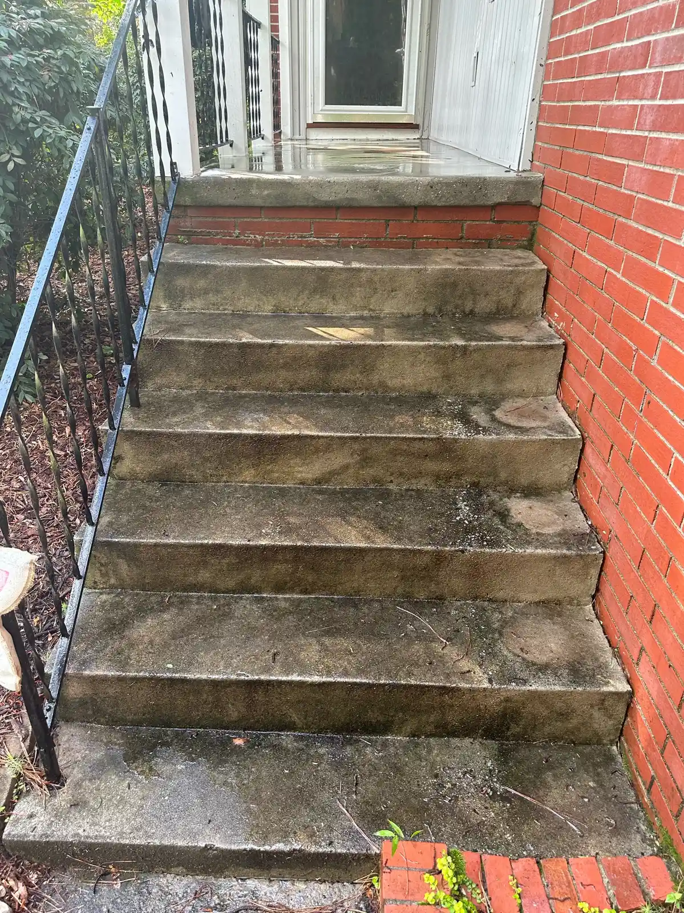
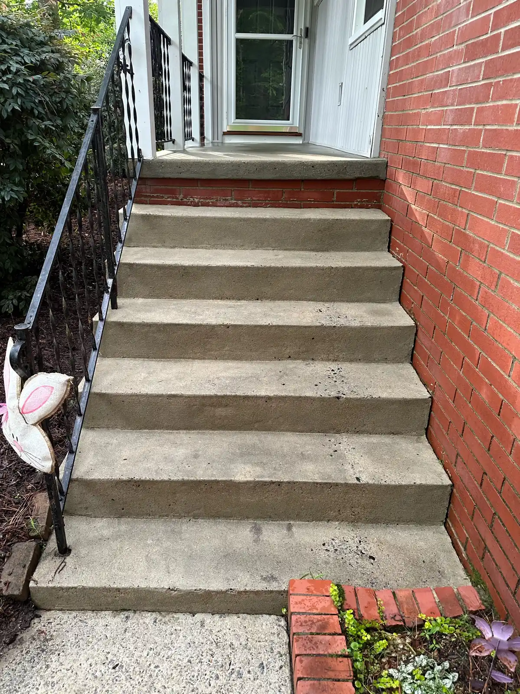
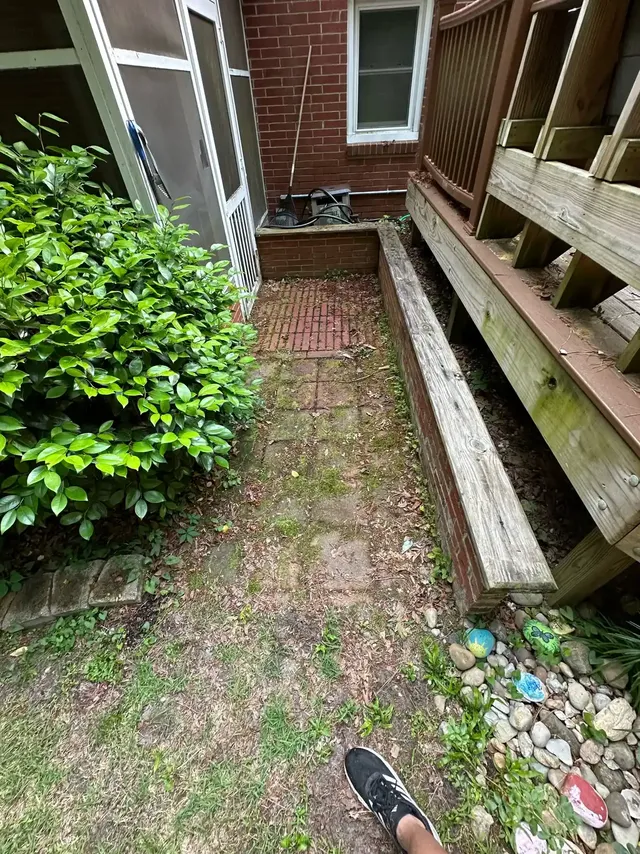


Recent jobs around Farmville & Pitt County


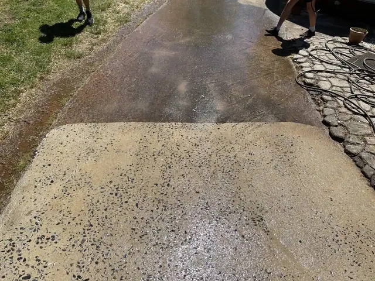

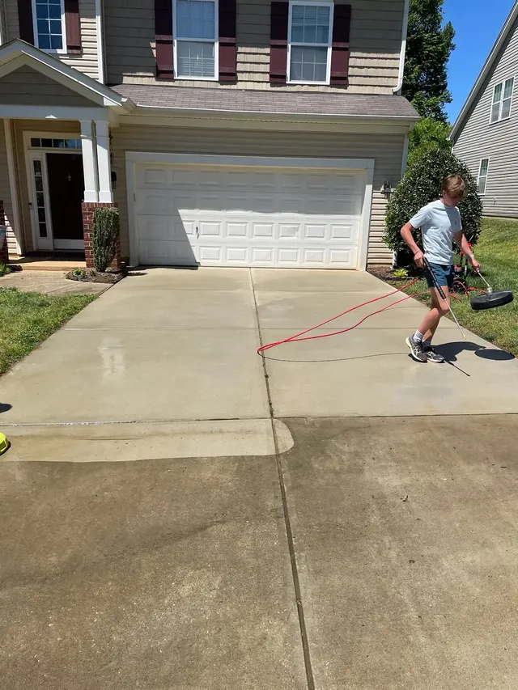
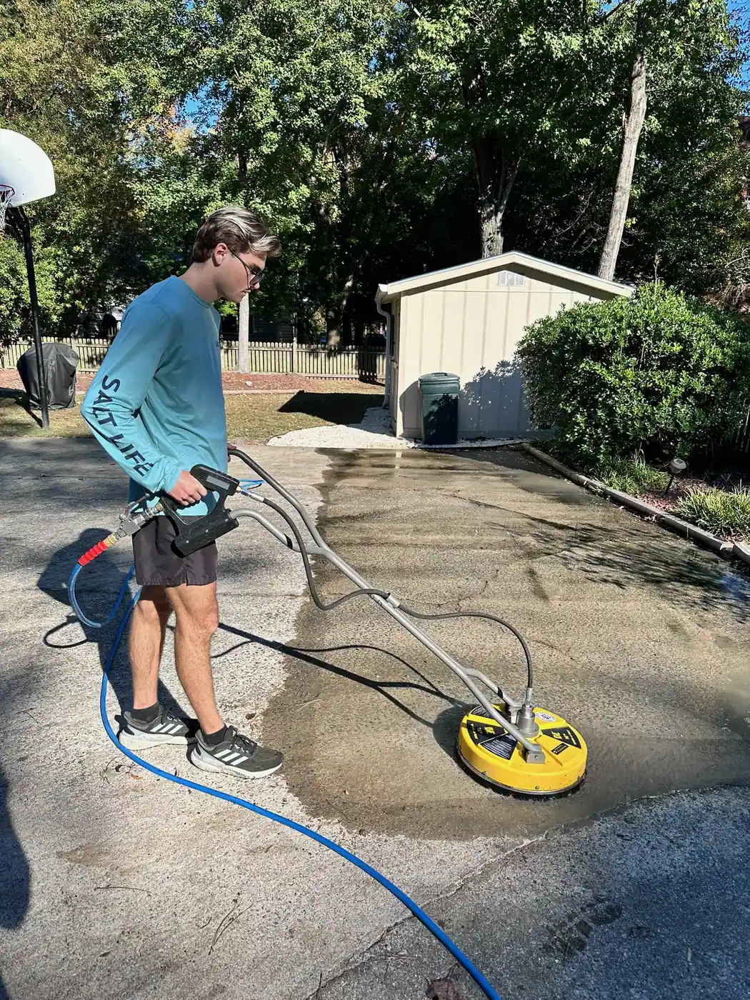
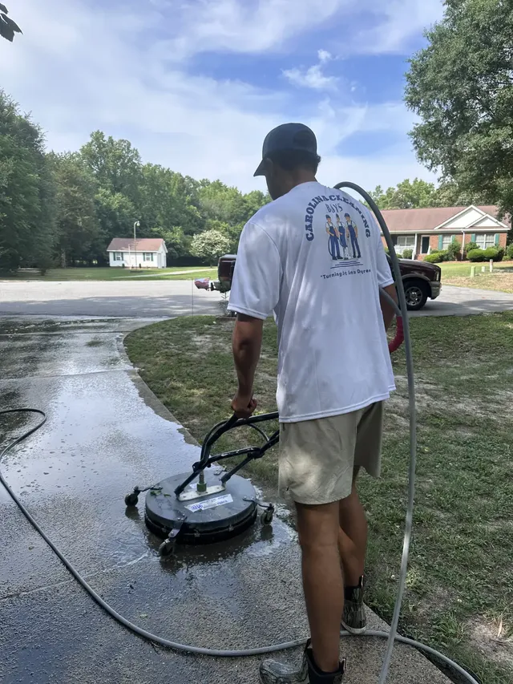
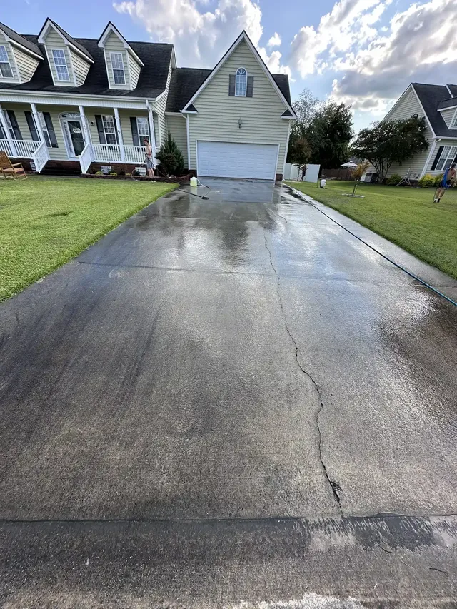
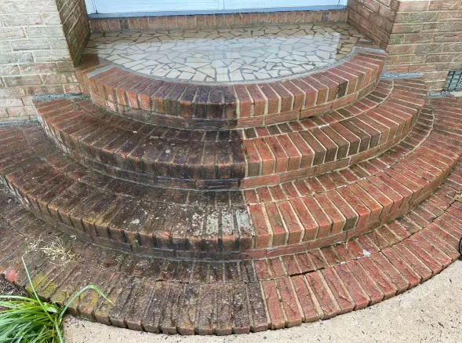
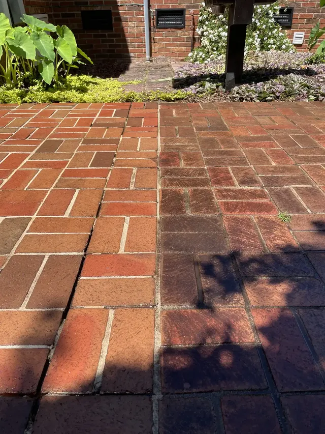
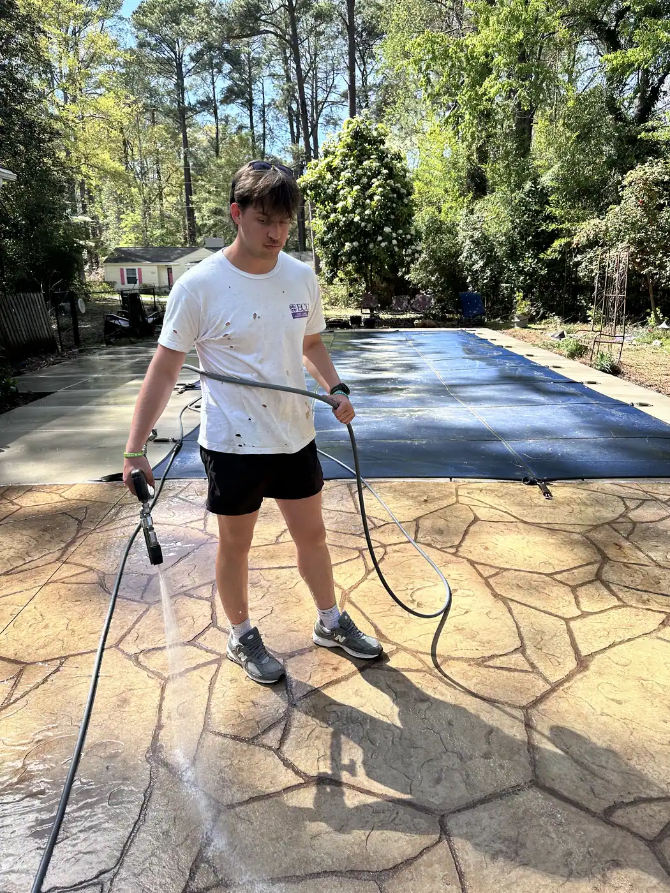
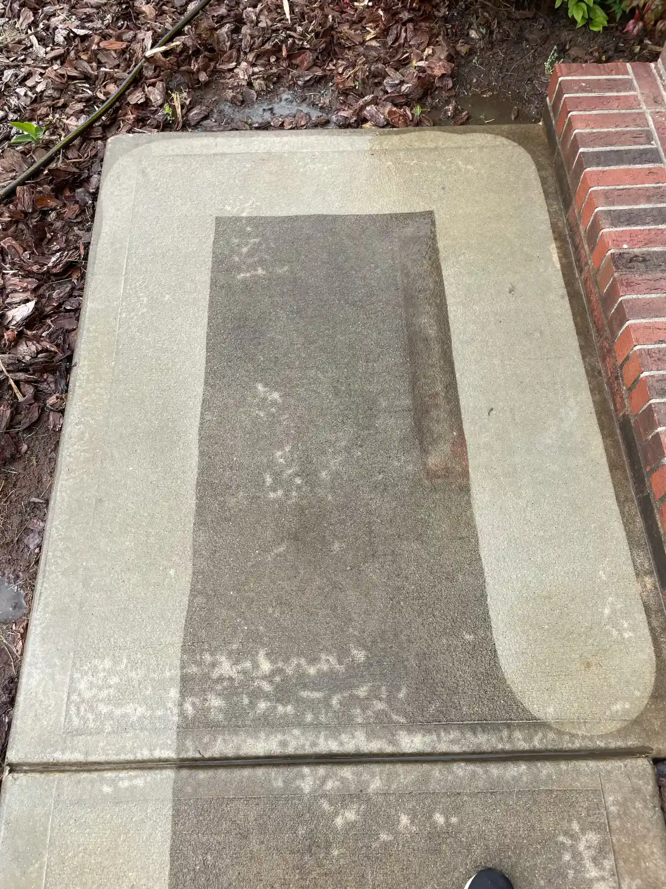

Surface Cleaning questions from Farmville residents
Surface cleaning uses a flat, round attachment with spinning jets that ride just above the concrete. Instead of the back-and-forth stripes a handheld wand leaves, it cleans the whole slab at one even pressure — so your Farmville driveway or sidewalk comes out uniform, edge to edge.
That's the whole point of using it — no. A spinning surface cleaner covers the slab evenly, which is why we use it on flat areas instead of a wand. You get a consistent, streak-free finish across the entire driveway or patio.
Absolutely. Any flat concrete or paved surface is fair game — driveways, sidewalks, front walks, back patios, and pool decks. Farmville has a lot of concrete walkways around older homes and downtown, and they all clean up the same way.
Most Farmville driveways run $100–$250 depending on square footage and how much red-clay or oil buildup we're pulling out; smaller sidewalks and patios cost less. You get a firm, free quote up front — no surprises on the day.
Join hundreds of satisfied customers in Pitt County. Get your free quote today!
Fill out the form below and we'll get back to you within 24 hours